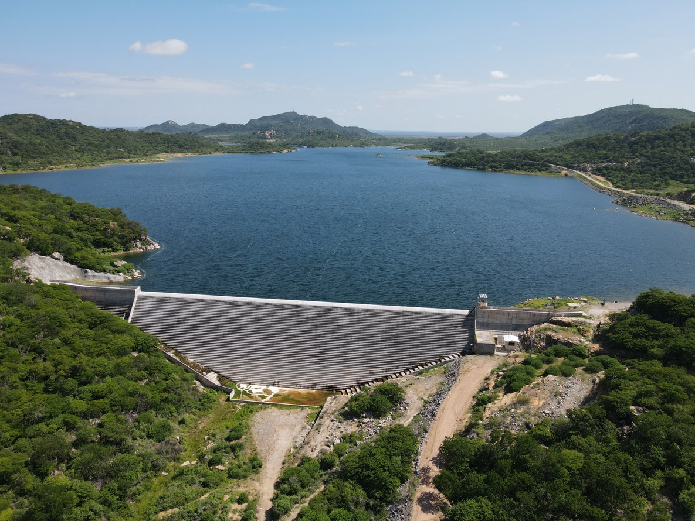

As investigações geotécnicas são etapas fundamentais no planejamento, construção, operação e manutenção de barragens. Elas permitem compreender as características do terreno, identificar condicionantes geológicos e avaliar o comportamento dos materiais presentes na fundação e no entorno da estrutura.
Por que investigar o terreno?
Antes da execução de uma barragem, é essencial conhecer o maciço rochoso, os solos, as descontinuidades, a presença de água, as zonas de alteração e possíveis áreas de instabilidade. Essas informações ajudam a reduzir riscos e orientar soluções técnicas mais seguras.
Principais informações obtidas
Entre os dados mais importantes estão a resistência dos materiais, permeabilidade, nível d’água, grau de fraturamento, condições de fundação, comportamento hidráulico e presença de estruturas geológicas relevantes.
Aplicação prática em barragens
Os resultados das investigações auxiliam na definição de tratamentos de fundação, cortinas de injeção, drenagens, monitoramento, auscultação e medidas de segurança. Também contribuem para elaboração de relatórios técnicos, planos de segurança e inspeções periódicas.
Conclusão
Uma investigação geotécnica bem conduzida fornece base técnica para decisões mais seguras e eficientes. Em obras de barragens, esse conhecimento é indispensável para reduzir incertezas, prevenir problemas e aumentar a confiabilidade do projeto.